name: inverse layout: true class: left, top, inverse --- # Data Warehouse --- ## Database Types + Data Warehouse + Database designed for using data to make decisions + OLAP + OnLine Analytical Processing + OLTP + OnLine Transactional Processing ??? ## Data Mining + These databases are often the starting point for data mining in companies + Most of the data sets from companies typically come from exporting some portion of their data warehouse --- ## Properties + Subject Oriented + Focus on core business objects + Integrated + Access to as much data as possible + Time Variant + Contains historical data with time parameter + Non-volatile + Updated (relatively) infrequently, in bulk ??? ## Examples + Yelp users can be directed to a datacenter depending on conditions. This data probably doesn't need to be in the DW + Yelp has several databases: log summaries, user info, salesforce. Most useful if they are all in the same place + Operationally, when someone changes their address, we just overwrite it in the OLTP DB. But DW potentially cares about the old value + OLTP writes to rows every time someone updates profile, review, etc. Lots of simultaneous updates. DW: typically once a day, in bulk --- ## OLAP or OLTP? + Transactional Focus vs. Analytic Focus --- ## OLAP or OLTP? + Transactional Focus vs. Analytic Focus + Used by Managers, Executives vs. DBAs, programmers --- ## OLAP or OLTP? + Transactional Focus vs. Analytic Focus + Used by Managers, Executives vs. DBAs, programmers + Contains current information vs. historical --- ## OLAP or OLTP? + Transactional Focus vs. Analytic Focus + Used by Managers, Executives vs. DBAs, programmers + Contains current information vs. historical + Variety of differently summarized data vs normalized --- ## OLAP or OLTP? + Transactional Focus vs. Analytic Focus + Used by Managers, Executives vs. DBAs, programmers + Contains current information vs. historical + Variety of differently summarized data vs normalized + Short transactions vs. Long queries --- ## OLAP or OLTP? + Transactional Focus vs. Analytic Focus + Used by Managers, Executives vs. DBAs, programmers + Contains current information vs. historical + Variety of differently summarized data vs normalized + Short transactions vs. Long queries + Indexes on strategic fields for fast lookups vs. Full table scans --- ## OLAP or OLTP? + Transactional Focus vs. Analytic Focus + Used by Managers, Executives vs. DBAs, programmers + Contains current information vs. historical + Variety of differently summarized data vs normalized + Short transactions vs. Long queries + Indexes on strategic fields for fast lookups vs. Full table scans + Simultaneous queries: 1-100 vs 100s-1000s --- ## OLAP or OLTP? + Transactional Focus vs. Analytic Focus + Used by Managers, Executives vs. DBAs, programmers + Contains current information vs. historical + Variety of differently summarized data vs normalized + Short transactions vs. Long queries + Indexes on strategic fields for fast lookups vs. Full table scans + Simultaneous queries: 1-100 vs 100s-1000s + Simple updates vs Complex queries --- ## OLAP or OLTP? + Transactional Focus vs. Analytic Focus + Used by Managers, Executives vs. DBAs, programmers + Contains current information vs. historical + Variety of differently summarized data vs normalized + Short transactions vs. Long queries + Indexes on strategic fields for fast lookups vs. Full table scans + Simultaneous queries: 1-100 vs 100s-1000s + Simple updates vs Complex queries + Guaranteed high performance vs Flexibility & Customization --- ## Overview 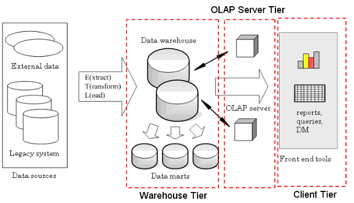 ??? ## From the front + Analytics team uses charts, reports, etc. + Generated from an OLAP server + Which uses data from a data warehouse (often DW and OLAP server are integrated) + Uses a process (ETL) to move the data from other source into DW --- ## Types of Data Warehouses + Enterprise + turnkey solution, often expensive, sophisticated but complex ingestion, integration, security features + Data Mart + Smaller, limited in scope. Designed for specific team or department + Virtual + OLAP built on top of an OLTP database + Cloud + Google BigQuery + Amazon Redshift ??? ## Vendors + Enterprise + Oracle + Greenplum + AsterData + Data Mart + MySQL + PostgreSQL + Virtual + MySQL + PostgreSQL + views or admin interface --- ## Metadata + Data about the data being stored + Overview: schema, languages + Operational: last update, query latency + Algorithms: normalization, transformation + Performance: job dependencies + Business: ownership, permissions ??? ## Considerations + As soon as several people start using the DW, they'll need to know about how it is put together + Metadata often comes as an after thought but is an important part of scaling --- ## Overview ??? ## Data Cubes + What are those cubes in the OLAP area? --- ## Data Cubes .left-column[ + Way of thinking about multi dimensional data + Useful metaphor because one can reason about ways to satisfy a query ] .right-column[ ] --- ## Dimensions | | Day 1 | Day 2 | Day 3 | |----------|-------|-------|-------| | Region 1 | $200 | $80 | $600 | | Region 2 | $300 | $90 | $650 | | Region 3 | $400 | $100 | $700 | ??? ## Data... Square + More of a data square: only 2 dimensions + Advertising on Yelp + Now we want to know Product Type (CPC, CPM, National) --- ## Cube: 3rd Dimension 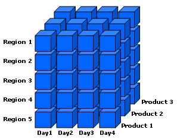 ??? ## More + Now we want to know Page Type (Business, Search, Home) + Hard to draw 4 dimensions, so instead... --- ## Multi-Cube 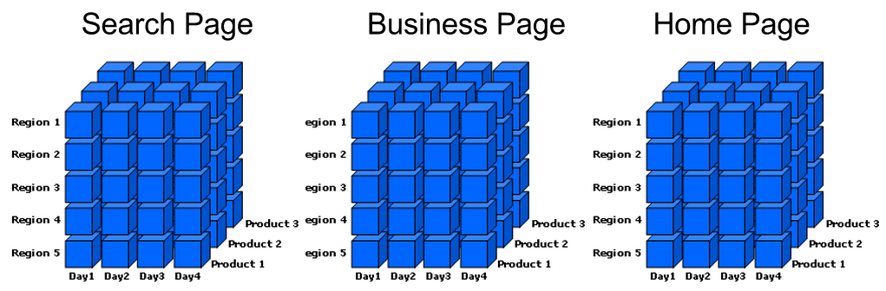 ??? ## More + Keep adding dimension as necessary --- ## Lattice 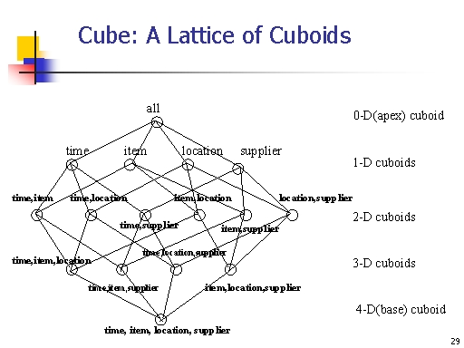 ??? ## Moving + Move back and forth from our 2d table + To our 3d cube, to our 4d multi-cube + The lower dimensional parts are summaries + At the extreme is just the total (i.e., all money made) --- ## Schemas .left-column[ + A *Data Cube* is a way of visualizing multi dimensional data ] --- ## Schemas .left-column[ + A *Data Cube* is a way of visualizing multi dimensional data + A *Star Schema* is a way to store the data in a database ] .right-column[ ] --- ## Fact table .white-background[ 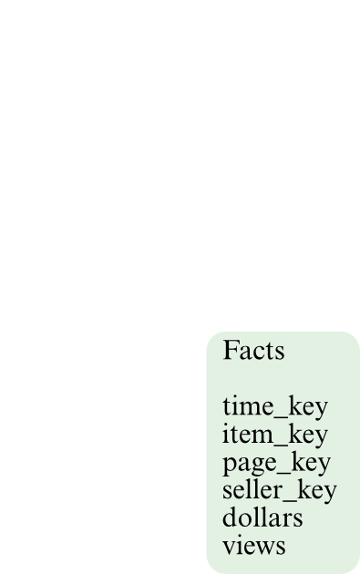 ] --- ## Dimension table .white-background[ 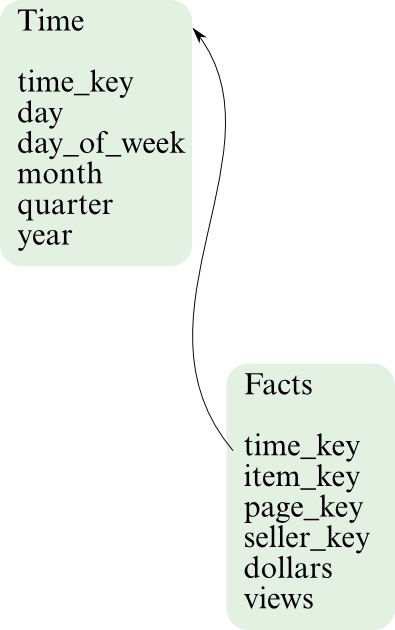 ] --- ## Dimension tables .white-background[ 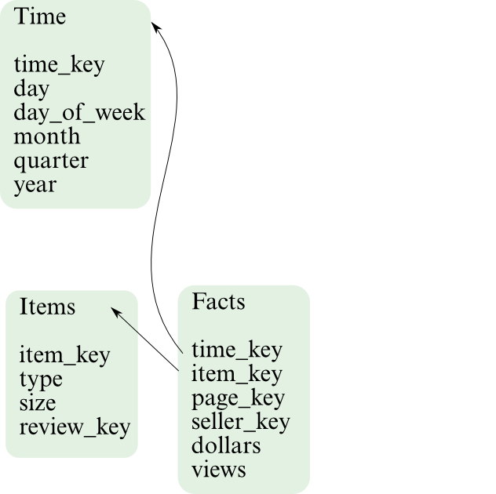 ] --- ## Dimension tables .white-background[ 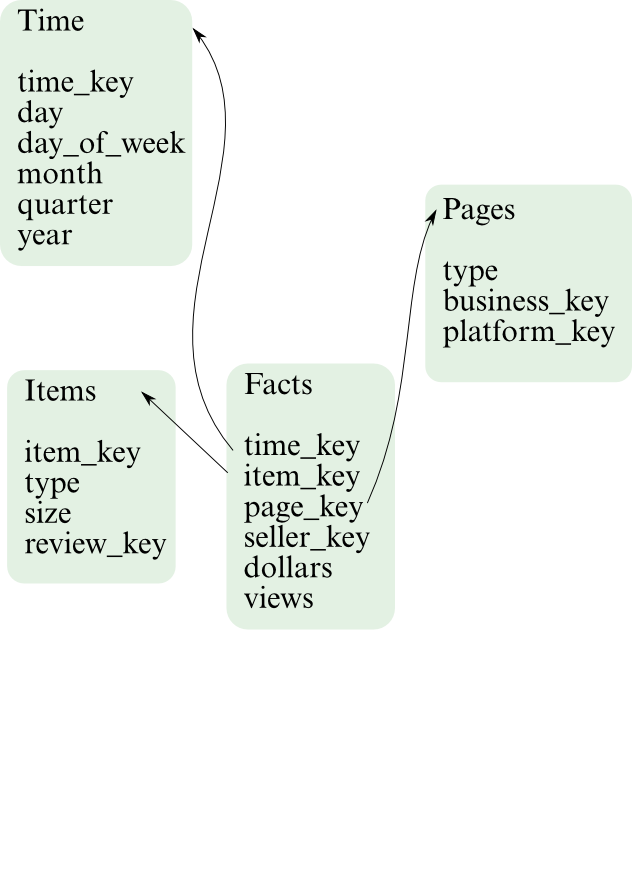 ] --- ## Dimension tables .white-background[ 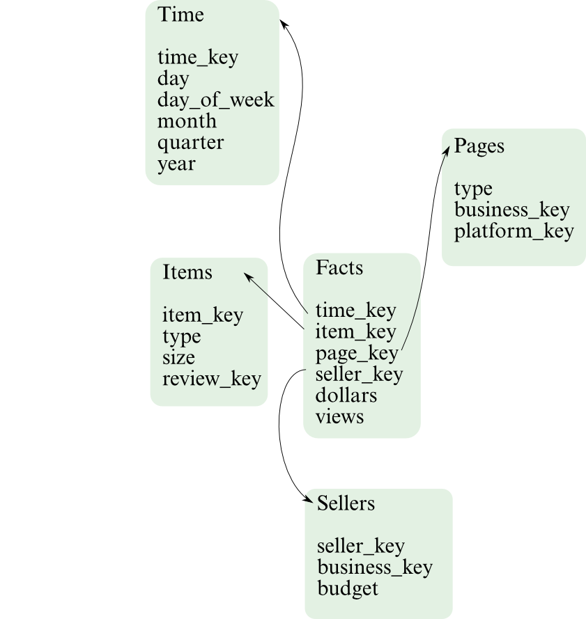 ] --- ## Star Schema --- ## Dimensions of Dimensions .white-background[ 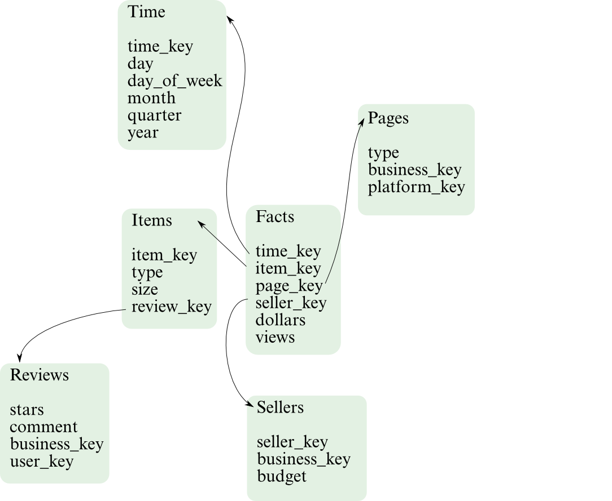 ] --- ## Dimensions of Dimensions .white-background[ 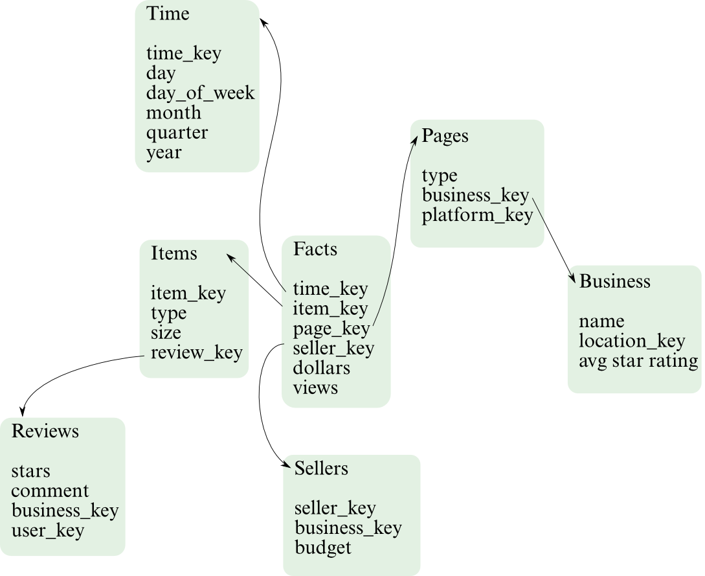 ] --- ## Dimensions of Dimensions .white-background[ 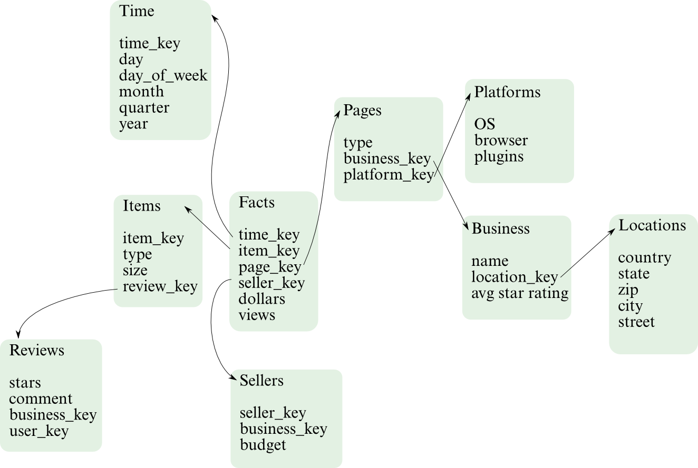 ] --- ## Dimensions of Dimensions .white-background[ 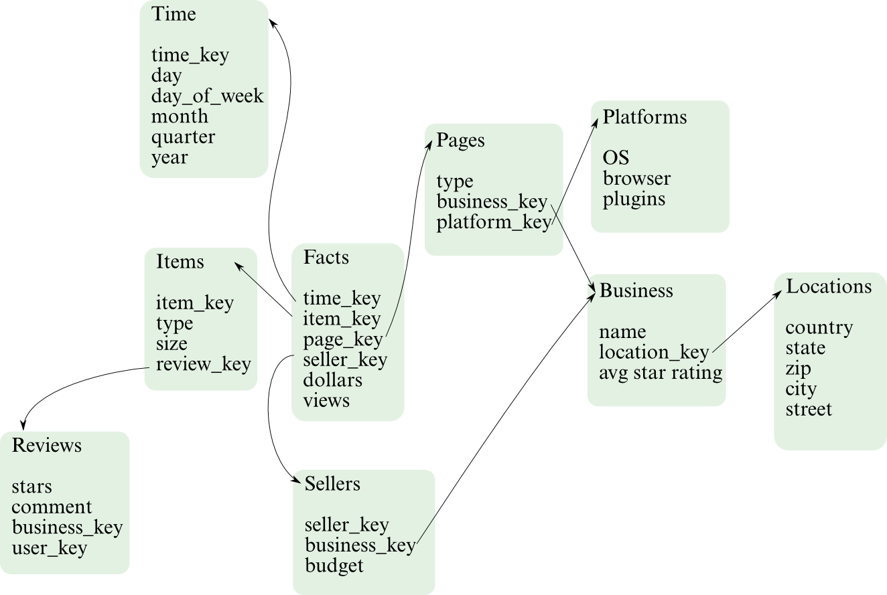 ] ??? ## Schema Name? + Any guesses what this fractal looking schema is called? --- ## Snowflake Schema + Schema with radiating dimension tables --- ## Constellation Schema + Schema with several fact tables and related dimensions --- ## Data Warehouse Operations + Rollup + Summarize data along fewer dimensions + Drill-down + Get details within a particular dimension + Slice + Select a particular value in a dimension + Dice + Consider a subset of the values in a dimension + Pivot + Swap, or rotate dimensions ??? ## Examples + Rollup + What countries are selling the most ads? + Drill-down + Spike in Q1 ad views. Which month most responsible? + Slice + Chart sales only for CPC + Dice + Only look at sales in US, IT, DE + Pivot + Swap axis on a chart --- ## Materialized Views + View + virtual table defined by a query + Non-materialized + Calculate summaries on the fly + Fully materialized + Pre-compute and store + Partially materialized + Variety of strategies: e.g., cache results after calculating ??? ## Usefulness + In DW, we're often storing different cubes in the lattice + For the country sample, do we have those summaries stored in another DB table? On disk? By month? Year? + Storing all possible summaries is expensive when loading data, and requires a lot more storage --- ## Architecture + ROLAP + Relational. Implement OLAP on top of a relational database + MOLAP + Multidimensional. Implements data cube as storage paradigm + HOLAP + Hybrid. Data in ROLAP, rollups in MOLAP + Specialized + Often distributed storage, parallel DB technology + NoSQL + Store data as key-value pairs, optimized in different ways ??? ## Details + ROLAP: MySQL, PostgreSQL + MOLAP: Oracle, Palo + HOLAP: Microsoft SQL Server + Specialized: AsterData, Greenplumb + NoSQL: Hive, BigTable, Cassandra --- ## *Break*